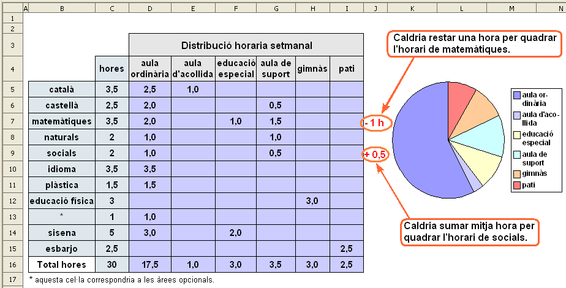
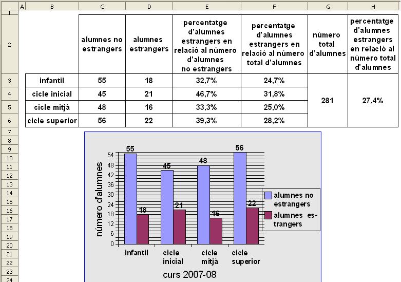

Presentació gràfica de l'activitat

Funcions que es fan servir en aquesta activitat
Objectiu de l'activitat
Aquesta activitat serveix per veure com estan distribuides les hores escolars d'un alumne durant una setmana (cel·les del rang D4:I4 de la graella) i amb representació gràfica mitjançant un diagrama de sectors.
Els números en vermell que apareixen a les cel·les del rang J5:J15 ajuden a quadrar l'horari. D'aquesta manera, el -1 significaria que hem de treure una hora i el + 0,5 que caldria afegir mitja hora per quadrar amb les hores que s'assignen a cada assignatura.
Desenvolupament de l'activitat
1. Obrir el fitxer M6 i afegir un full anomenant-lo M6P6 distribució hores
2. Fer una graella com la que es mostra en aquest gràfic.
3. Escriure a la cel·la J5: =SI(SUMA(D5:I5)>C5;"- "&SUMA(D5:I5)-C5&" h";SI(SUMA(D5:I5)<C5;"+ "&C5-SUMA(D5:I5)&" h";""))
La fórmula de la cel·la J5 està formada per dues condicions:
La primera condició la representa el següent: =SI(SUMA(D5:I5)>C5;"- "&SUMA(D5:I5)-C5&" h". És a dir, si la suma de les cel·les del rang D5:I5 és major que el valor de la cel·la C5, llavors apareix el signe negatiu ("-") que es concatena amb el resultat de restar el valor rang D5:I5 menys el valor de la cel·la C5. D'aquesta manera s'indica quantes hores calen treure per quadrar amb les hores que s'indica a la cel·la C5.
La segona condició la representa el següent: SI(SUMA(D5:I5)<C5;"+ "&C5-SUMA(D5:I5)&" h";"")). És a dir, si la suma de les cel·les del rang D5:I5 és menor que el valor de la cel·la C5, llavors apareix el signe positiu ("+") que es concatena amb el resultat de restar el valor de la cel·la C5 menys el valor de la suma de les cel·les del rang D5:I5. D'aquesta manera s'indica quantes hores calen afegir per quadrar amb les hores que s'indica a la cel·la C5.
4. Copiar la cel·la
C5 i enganxar-la a les cel·les del rang
J6:J16
5. Escriure a la cel·la
C16:
=SUMA(C5:C15)
6. Copiar la cel·la
C16 a les cel·les del rang
D16:I16
7. Fer un diagrama de sectors en base al contingut de les cel·les dels rangs
D4:I4 i
D16:I16
8. Fer una macro amb les següents funcions:
9. Protegir les cel·les que convingui.
10. Ocultar les cel·les que convingui.
11. Comprovar que l'activitat funcioni correctament.
12. Desar el fitxer M6.
Presentació gràfica de l'activitat.

Funcions que es fan servir en aquesta activitat
Objectiu de l'activitat
Estudiar els percentatges d'alumnes estrangers i no estrangers en un col·legi.
Desenvolupament de l'activitat
1. Obrir el fitxer M6 i afegir un nou full amb el nom de M6P6 gràfic alumnes
2. Fer una taula coma la que es veu en el gràfic de presentació de l'activitat copiant el que hi ha escrit en les cel·les dels rangs C2:H2 i B3:D6
3. Escriure a la cel·la E3: =SI(O(C3="";D3="");"";D3*100/C3)
Si la cel·la C3 o la cel·la D3 no mostren cap valor, llavors la cel·la E3 no mostra cap valor; si no (si una de les dues cel·les mostra valor), llavors es calcula el tant per cent d'alumnes estrangers respecte al número d'alumnes no estrangers en el cicle infantil.
4. Copiar la cel·la
E3 i enganxar-la a les cel·les del rang
E4:E6
Aquestes fórmules segueixen la mateixa dinàmica de l'explicat en la nota del pas 3 per als respectius cicles.
5. Escriure a al cel·lqa
F3:
=SI(O(C3="";D3="");"";D3*100/SUMA(C3:D3))
En aquesta fórmula es fa el percentatge d'alumnes estrangers en relació al número total d'alumnes (estrangers i no estrangers) del cicle inicial.
6. Copiar la cel·la
F3 i enganxar-la a les cel·les del rang
F4:F6
Aquestes fórmules segueixen la mateixa dinàmica de l'explicat en la nota del pas 5 per als respectius cicles.
7. Escriure a la cel·la
G3:
=SI(SUMA(C3:D6)=0;"";SUMA(C3:D6))
Aquesta fórmula suma les cel·les del rang C3:D6 (número total d'alumnes de tots els cicles) si la suma d'aquest rang no és 0; si ho és, la cel·la G3 no mostra cap valor.
8. Escriure a la cel·la
H3:
=SI(G3="";"";SUMA(D3:D6)*100/G3)
Amb aquest fórmula es calcula el percentatge d'alumnes estrangers en relació al número total d'alumnes si la cel·la G3 mostra algun valor.
9. Fer un diagrama de columnes com es veu en el gràfic de presentació de l'activitat amb les dades de les cel·les del rang
B2:D6
10. Protegir les cel·les que convingui.
11. Comprovar que funcioni correctament l'activitat.
12. Desar el fitxer
M6